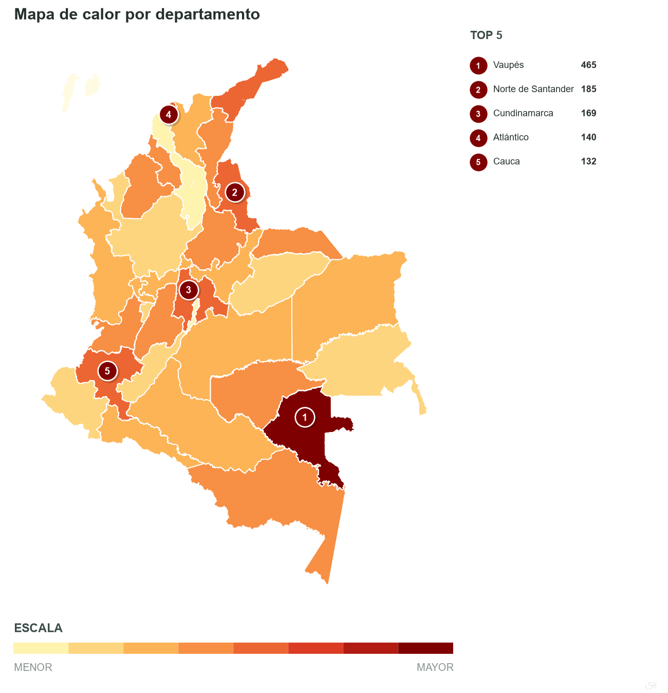
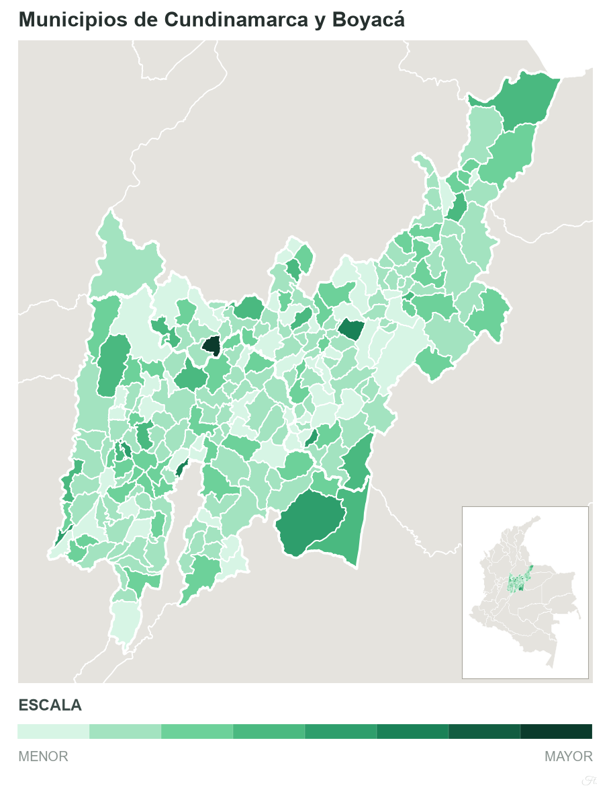
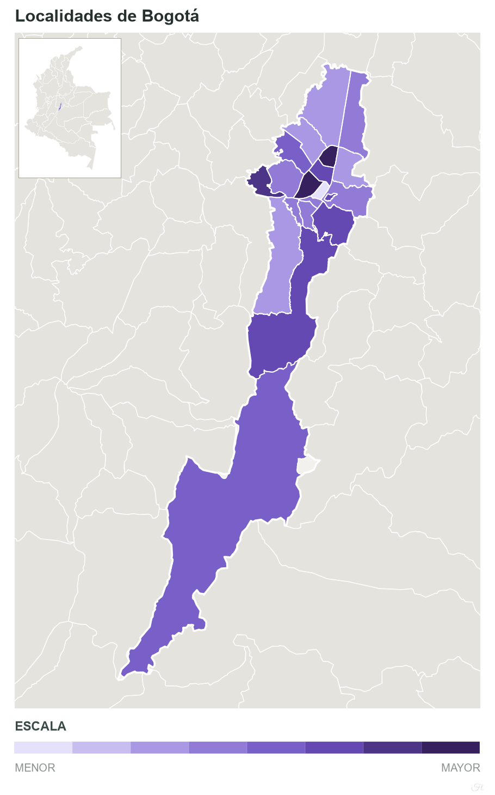

Mapas de calor de Colombia por departamento, municipio y ciudad
Aplicación gratuita y sin registro. Se escriben o cargan los datos desde Excel o CSV, se elige el área y se descarga un mapa de calor listo para informes y presentaciones.

Qué permite hacer
Un mismo flujo para todo el país: desde el mapa nacional por departamentos hasta las localidades de una ciudad.
Niveles geográficos
País, regiones naturales, departamentos, 1.123 municipios y la división interna de 22 ciudades (localidades, comunas y corregimientos).
Datos desde Excel o CSV
Los nombres se normalizan (tildes, mayúsculas, alias) y los que no se reconocen reciben una sugerencia. Admite formatos numéricos colombianos e internacionales.
Colores y escalas
Escala lineal, de raíz, logarítmica o por cuantiles, con 15 paletas o colores propios, y categorías por segmento.
Diseño del mapa
Lupa sobre lugares pequeños, minimapa, barra de escala, flecha del norte, etiquetas, leyenda y diez plantillas.
Exportación
Mapa en PNG, JPG, TIFF, SVG o PDF. Datos en CSV, Excel, JSON, Parquet o GeoJSON.
Español e inglés
Interfaz y mapas en ambos idiomas, con modo claro y oscuro, y adaptada a computador, tableta y celular.
Cómo funciona
Tres pasos, sin instalar nada.
Elegir el área
Todo el país, una región, uno o varios departamentos, municipios específicos o una ciudad.
Cargar los datos
Escribirlos en la tabla de la aplicación o subir un archivo con las columnas Departamento, Municipio y Valor.
Ajustar y descargar
Definir colores, escala y textos, y descargar el mapa en el formato necesario.
Ejemplos
Mapas generados con la aplicación a partir de datos de prueba.


Los valores de los ejemplos son ficticios.
Preguntas frecuentes
Lo esencial antes de empezar.
¿Qué niveles geográficos admite?
País completo, regiones naturales, departamentos, municipios (1.123) y la división interna de 22 ciudades (localidades, comunas o corregimientos).
¿Cómo se cargan los datos?
Se escriben en una tabla dentro de la aplicación o se cargan desde un archivo Excel (XLSX, XLS) o CSV. Las columnas se reconocen por su encabezado: Departamento, Municipio, Valor y, de forma opcional, Segmento.
¿En qué formatos se descarga el mapa?
En PNG, JPG, TIFF, SVG o PDF, con resolución configurable. Los datos se pueden descargar en CSV, Excel, JSON, Parquet o GeoJSON.
¿Tiene costo o requiere registro?
No. La aplicación es gratuita, no requiere cuenta y su código es abierto bajo licencia MIT.
¿Se almacenan los archivos cargados?
No. Los archivos se procesan en memoria durante la sesión y no se guardan. Aun así, se recomienda no subir datos sensibles.
Crear un mapa de calor ahora
Si la aplicación estuvo sin uso, la primera carga puede tardar unos segundos.
Abrir la aplicación